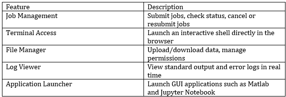
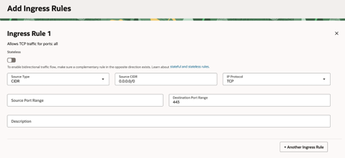
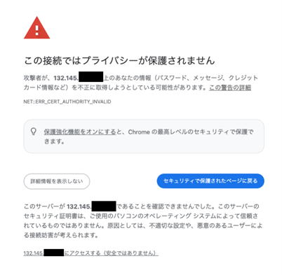
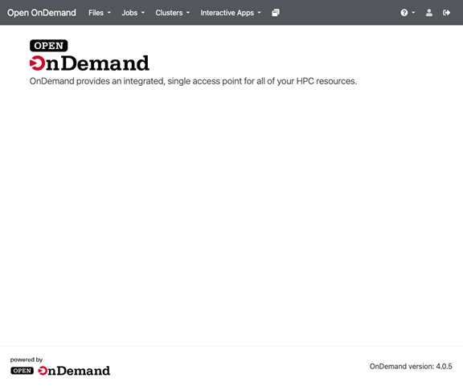

Introduction
In High-Performance Computing (HPC) environments, users have traditionally relied on Linux command-line interfaces (CUI). Some commercial products and HPC cloud SaaS offerings provide GUI-based access.
This article introduces the installation procedure for OpenOnDemand, an open-source solution enabling such functionality. While the base environment here is an OCI HPC Cluster (Slurm cluster), the same steps apply to other Slurm clusters as well.
What is OpenOnDemand?
OpenOnDemand (https://openondemand.org/) is an open-source web portal for HPC clusters that use job schedulers (Slurm, PBS, LSF, etc.) as their backend. Through a web browser, users can perform the following interactive operations:

These features provide intuitive and secure access to HPC clusters, which previously required CLI-only operation.
What is an HPC Cluster?
An HPC Cluster is a Terraform+Ansible-based script that enables quick deployment of HPC workloads on OCI.
OCI provides “Resource Manager,” a Terraform-as-a-Service, allowing easy deployment via a web-based wizard.
https://github.com/oracle-quickstart/oci-hpc
Deployment Steps
Configure the HPC Cluster
Follow this reference:
https://qiita.com/itokazu/items/63d2e3cebdcdda5afce0
Access the Login Node via SSH
ssh opc@<Public IP>
Enable Required Repositories
sudo dnf install epel-release
sudo yum-config-manager --enable ol8_codeready_builder
sudo yum-config-manager --enable ol8_developer_EPEL
Install Prerequisite Packages
sudo dnf -y module enable ruby:3.3 nodejs:20
Install OpenOnDemand 4
sudo dnf install -y https://yum.osc.edu/ondemand/4.0/ondemand-release-web-4.0-1.el8.noarch.rpm
sudo dnf install -y ondemand mod_authnz_pam
sudo systemctl enable --now httpd
Enable Apache httpd PAM Authentication Module
sudo vi /etc/httpd/conf.modules.d/55-authnz_pam.conf
# LoadModule authnz_pam_module modules/mod_authnz_pam.so
↓ Change to:
LoadModule authnz_pam_module modules/mod_authnz_pam.so
Create a Self-Signed TLS Certificate
PRIVATE_IP="<Private IP of Login Node>"
sudo openssl req -new -newkey rsa:4096 -nodes -x509 -sha256 -days 825 -keyout /etc/pki/tls/private/ood-ip.key -out /etc/pki/tls/certs/ood-ip.crt -subj "/CN=${IP}" -addext "subjectAltName = IP:${PRIVATE_IP}"
Add Certificate to Host’s Trusted CA Store
sudo cp /etc/pki/tls/certs/ood-self.crt /etc/pki/ca-trust/source/anchors/
sudo update-ca-trust extract
Configure Apache/OOD Portal
Replace <Public IP of Login Node> before running.
sudo mkdir -p /etc/ood/config
cat <<'EOF' | sudo tee /etc/ood/config/ood_portal.yml
servername: "<Public IP of Login Node>"
ssl:
- 'SSLCertificateFile "/etc/pki/tls/certs/ood-ip.crt"'
- 'SSLCertificateKeyFile "/etc/pki/tls/private/ood-ip.key"'
auth:
- 'AuthType Basic'
- 'AuthName "Open OnDemand"'
- 'AuthBasicProvider PAM'
- 'AuthPAMService ood'
- 'Require valid-user'
EOF
sudo cp /etc/pam.d/sshd /etc/pam.d/ood
sudo /opt/ood/ood-portal-generator/sbin/update_ood_portal
sudo systemctl enable --now httpd
Define Slurm Cluster
Replace <Private IP of Login Node>.
sudo mkdir -p /etc/ood/config/clusters.d
cat <<'EOF' | sudo tee /etc/ood/config/clusters.d/myslurm.yml
---
v2:
metadata:
title: "OCI HPC Cluster"
login:
host: "<Private IP of Login Node>"
job:
adapter: "slurm"
bin: "/usr/bin"
conf: "/etc/slurm/slurm.conf"
copy_environment: false
EOF
Create Portal Users
The HPC Cluster includes an LDAP server.
Register users in LDAP:
https://qiita.com/itokazu/items/25ace87c5c6851f1c11f
Update VCN Security List
Allow inbound connections on port 443 in the Subnet’s Security List.
Example uses 0.0.0.0/0 (all IPs), but adjust as needed.

Verify Login
Access in the browser:
https://<Public IP of Login Node>
A warning screen appears. Click “Proceed to 132.145.xx.xx (Not Secure)”.

A login prompt will appear. Enter the LDAP username and password.
Upon success, the OOD portal screen is displayed.

Conclusion
With these steps, OpenOnDemand is successfully installed on an OCI HPC Cluster.
End users can manage jobs and files through a browser without relying on a login shell, enabling easier collaboration and documentation within teams.